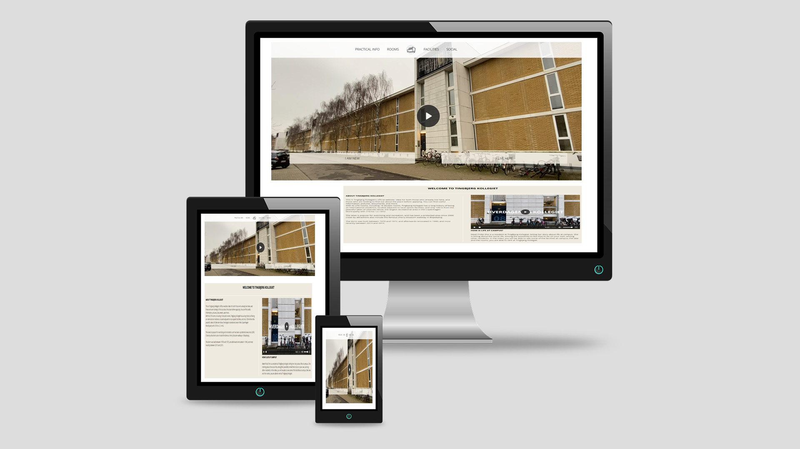

Tema 5
05.03.01 Redesign og dokumentation

I denne case, fik vi til opgave, i en gruppe på 4 personer, at udvælge en virksomheden, og derefter redesigne virksomhedens hjemmeside. Min gruppe og jeg, valgte at tage kontakt til Tingbjergkollegiet, og fik lov at tage udgangspunkt i deres hjemmeside.
For at løse denne opgave, gjorde vi følgende:
- Analyse af det eksisterende website
- Analyse og udvalg af målgruppe
- Beskrivelse af koncept og ide for det nye site
- Wireframes og layoutdiagrammer for ændringerne
- Styletile og moodboard
- Håndkodning i CSS, JS og HTML
- Pitch af endelige løsning
- Refleksion og perspektivering af forløbet med opgaven
Grundet corona, var jeg afskåret fra at mødes med resten af gruppen, da jeg bor uden for kommunegrænser, der blev underlagt restriktioner, for gennemrejse. Vi aftalte dog at mødes og arbejde over Teams, hvilket viste sig at have sine gode og mindre gode sider, som vi gennem processen forsøgte at bearbejde på bedste vis, på baggrund af den skrevne gruppekontrakt vi havde lavet.
Vi brugte projektstyringsværktøjet SCRUM ved at lave et Trelloboard, hvor vi hver morgen mødtes online, og førte hinanden ajour med dagens opgaver. Dette værktøj, viste sig at være et overskueligt værktøj til at tilrettelægge dagens arbejde. Vi mødtes desuden også nogle timer efter, for at afrunde dagens arbejde, inden fyraften, så vi desuden kunne føre vores Burn Down-chart.
Research og Double Diamond
Vi benyttede os af metoden for Double Diamond, og startede med research fasen. Her stod jeg for følgende:
- Sitemap
- Funktionalitetsliste
- Desk research v. analyse af virksomhedens brand og målgruppe
- Desk research v. analyse af konkurrenter
- Observationstests (tænke-højt-tests) af potentielle brugere, for at vurdere hvilke ændringer der burde foretages
Derudover lavede vi en BERT-test og kom frem til følgende:
- Virksomhedens fremstår som kedelig og upersonlig, med et outdated udseende
- Virksomheden rammer ikke den potentielle målgruppe; studerende i alderen 18-29 år
- Sitet viser ikke de sociale kvaliteter, som kollegiet tilbyder deres beboere
- Funktionaliteten virkede forvirrende, og sitemappet var indviklet
- Konkurrenternes hjemmesider, appellerer i større grad til målgruppen, hvilket gør at virksomheden ikke formår at trænge igennem til konsumenterne
- Hjemmesiden formår ikke at kommunikere til sin målgruppe, herunder nuværende beboere (med info til disse omkring åbningstider og kontaktinformation) og nye potentielle beboere, som skal have vist værelser og faciliteter som kollegiet tilbyder
Define
Efter overstående var tilpasset, gik vi i gang med at planlægge et nyt sitemap, wireframes, samt styletile og moodboard. I gruppen, diskuterede vi frem og tilbage, om hvordan designet og farverne skulle være, og jeg kom frem til det der kan ses i denne (se bilag 3).
Nogle i min gruppe, synes vi skulle gå i en anden retning, med hensyn til farver og design, så jeg gik på kompromis med dette, og lod dem stå for denne del. Dog stod jeg overordnet for udviklingen og beskrivelsen af fotostilen.
Vi startede i begyndelsen med at arbejde i stærke kontrastfarver; blå, rød og gul, som kollegiet oprindeligt bad os om at arbejde i, da det var deres brands farver. Personligt, ville jeg have valgt anderledes men med gruppemind, gik jeg med på vognen med disse farver. Vi endte dog i sidste ende med at vælge mere neutrale farver, til det endelige site, hvilket nok viste sig at være en bedre ide.
Vi begyndte herefter at planlægge videoproduktionen, til det endelige site, som vi blev bedt om at inkludere. Grundet distance, var jeg ikke meget med til at filme og redigere vores endelige video, men jeg blev hele tiden holdt ajour med projektets udvikling, både mht. synopsis, storyboard, b-rolls ideer, interviewguide og redigeringsprocessen.
Develop
Jeg stod for at redigere fotos ud fra vores beskrevne fotostil. Vi arbejdede meget i neutrale og lyse farver, for at skabe et realistisk blik på kollegiets faciliteter.
Jeg redigerede billederne i Photoshop, med fokus på ændringer i saturation, exposure og justeringer i brightness og kontraster, og benyttede desuden Clone Stamp tool, til at fjerne ”snavs” fra billederne. Lyset er forsøgt at blive fremstillet naturligt i billederne, hvilket havde sine udfordringer, grundet dårligt vejr, under fotoproduktionen.
Jeg stod for størstedelen af kodeprojektet, herunder udviklede jeg koden til footeren, nav-menuen og burgermenuen, i JS, HTML og CSS. Jeg stod desuden for udviklingen af ”Contact”-siden, og Index-siden og designede ud fra min gruppes valg af farver og layout. Jeg lavede desuden layoutdiagrammerne, ud fra en wireframe, som blev lavet af et andet gruppemedlem.
Til slut brugte vi BERT og Lighthousetests til at lave de sidste ændringer inden vi kunne pitche det endelige resultat. BERT-testen viste at vi havde lavet de ønskede forbedringer vi ville opnå, og med Lighthousetesten, hvor vi gik ind og lavede enkelte billedoptimeringer.
Deliver
Til slut pitchede vi vores resultat til resten af klassen (se bilag 5), og fik feedback:
- Vores video på forsiden, havde en fejl og var ikke responsiv, i det endelige site, grundet problemer med gitHub
- Billederne havde problemer med lysindfaldet, grundet årstiden
- Farvepaletten burde have en stærke kontrast, dog ikke så kontrær som den oprindelige
- Der burde være mere personlighed i introvideoen – vi blev udfordret på dette grundet corona, som gjorde vi ikke kunne vise billeder af sociale aktiviteter, som planlagt
Ud over det konstruktive kritik, fik vi en fin tilbagemelding på at sitet fremstod bedre end det oprindelige, hvilket selvfølgelig er en fin bedrift (se det oprindelige site her, bilag 1), og (redesignet kan ses her, via bilag 2).